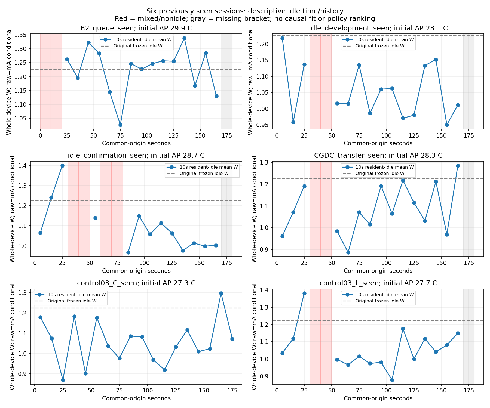

새 L에서 기존 가산 후보 차이 +18.139→+27.929J로 악화. 총2개선/3악화, 미채택 유지. 새 계수·실측0, strict/default/experiment_ready=false 불변. 독립 확인/정확도 PASS/정책 순위 아님.
| 자료 | 고정 pre5–30 W | late90–120 W | 변화W |
|---|---|---|---|
| 기존 queue B2 | null (부적격) | 1.243124 | null |
| 유휴 개발 | 1.026539 | 1.031159 | +0.004620 |
| 유휴 확인 | 1.256553 | 1.106605 | -0.149949 |
| CG_DC 전이 | 1.088517 | 1.157682 | +0.069166 |
| 대조03 C 무부하 | 0.971881 | 0.989955 | +0.018073 |
| 대조03 L 부하 | 1.195793 | 1.011505 | -0.184287 |
서로 다른 APK/프로토콜·초기AP·배경전력·이력이다. 한 무부하 C와 고정순서 C→L만으로 시간/부하/온도의 영향을 분리하지 않는다.10초 bin은 같은 세션의 상관된 기술적 집계, 예측 오차 한도 아님.

빨강: 활성/혼합으로 유휴값 제외. 회색: 끝 bracket 결측. 끊긴 값을0으로 채우지 않았습니다. AP 값은 초기조건 설명이며 온도→W 관계를 적합하지 않았습니다.
| 출력 | 상태 |
|---|---|
| 실제 일정·유휴 관측 재생 | 적격 고정창에 한정 |
| 원래 동결식 조건부 계산 | 외삽 진단, strict/PASS 아님 |
| 새 일정의 유휴 전력 예측 | 전용 가능한 법칙 미식별 |
| 동적 정책 J/AP 순위 | null, 서비스 비교와 구분 |
보고서·다음 한 공백·재현 · 범위/요약 · 고정창 · bin · 기술 통계 · 기존 후보 점수 · 검증 · 원래 C/L 결과